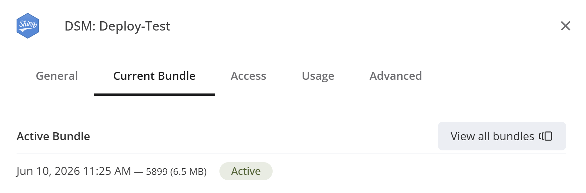
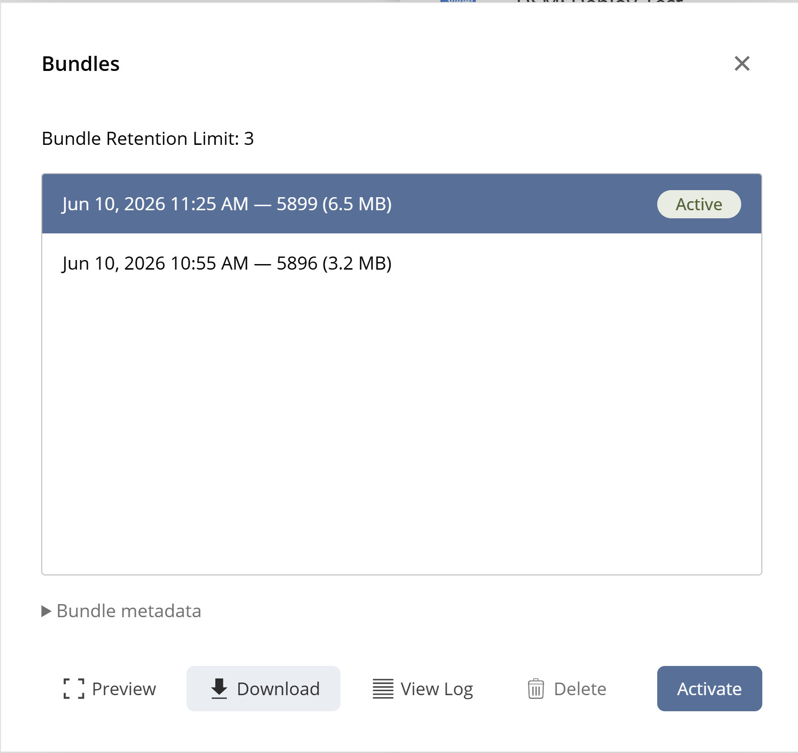
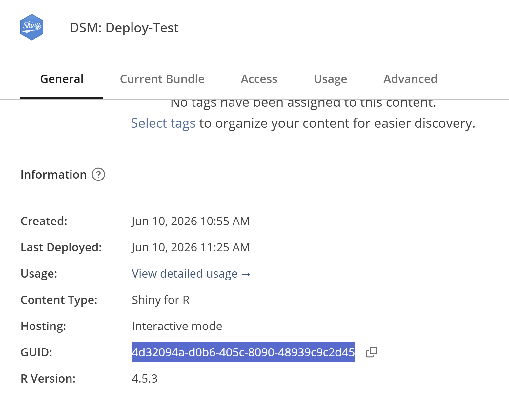

(Re)-deploying Shiny Apps
a08-deployment.RmdDeploying from an appStructure
We can deploy a shiny app directly from an appStructure
object. We can do this by calling deployAppStructure()
deployAppStructure(
appStructure = appStructure,
appDir = tempdir())deployAppStructure() is basically a wrapper around
rsconnect::deployApp(). deployAppStructure()
has the dot-dot-dot parameter (...) that will pass any
other parameters you specify to rsconnect::deployApp().
This allows you to pass things like an appId or account
arguments.
Re-deployment
Lets say we would like to restructure our shiny app based on some feedback we have gotten. We can download a tar.gz file from posit:
settings -> Current Bundle -> View all bundles -> Download
You can select the bundle to download, but usually you want the one labeled as “active”.


This file is structured as followed:
bundle-xxxx.tar.gz
|- .
|- <...>
|- appStructure.qsThere is no need to unpack the tar.gz-file,
loadFromDisk() will extract the appStructure
object for us:
appStructure <- loadAppStructure(
filePath = "./bundle-xxxx.tar.gz",
appStructureFileName = "appStructure.qs"
)Now we have an identical copy of the appStructure that
we made before. We can alter the appStructure as we
like:
# Remove `base`
appStructure$base <- NULL
# Re-order alphabetically:
appStructure <- appStructure[sort(names(appStructure))]With our updates made, we can re-deploy our app, by using the
deployAppStructure() function again, note that we pass the
appId argument, which is found in the info tab
on posit:

deployAppStructure(
appStructure = appStructure,
appDir = tempdir(),
appId = 123
)